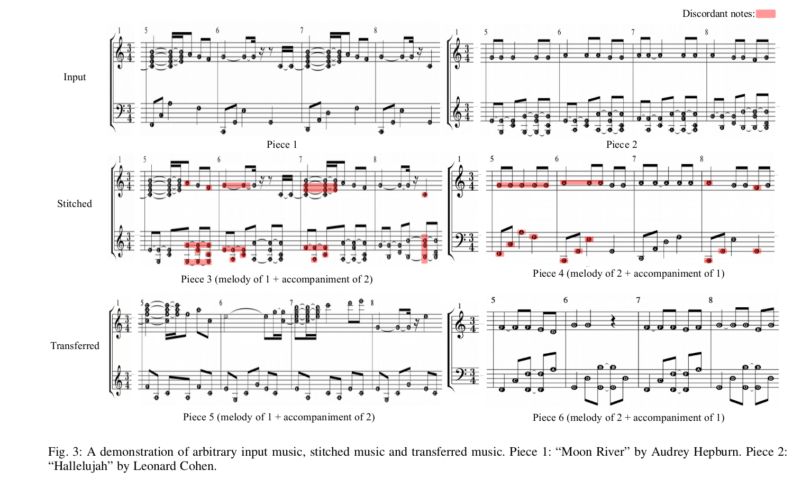

Figure 3: A demonstration of arbitrary input music,stitched music and transferred music.
Fig.3 shows two examples of arbitrary input music (first row), two examples of stitched music (second row), and two examples of transferred music (third row). In this example, Piece 1 is the therapeutic music and Piece 2 is the arbitrarily selected pop music. Pieces 3 and 4 are directly stitched by swapping the melody and accompaniment of Pieces 1 and 2. Pieces 5 and 6 are transferred from Pieces 1 and 2. Piece 5 inherits the main melody of Piece 1 and the characteristics of Piece 2’s accompaniment; Piece 6 inherits the main melody of Piece 2 and the characteristics of Piece 1’s accompaniment. In all examples, the upper and lower part of the staff represent the melody and the accompaniment, respectively.
Stitching suffers from two main disadvantages. First, it brings excessive information into music, leading to complexity, redundant musical expression, and chaotic sound. Second, it produces disharmony. Specifically, in original pieces, the accompaniment of each bar creates an implied harmony to support the corresponding melody, which is determined by the compound relationship between multiple tones at the same musical time. However, reassembling melodies and accompaniment without adjustment eliminates such harmonic support, resulting in poor performance. As an example, in the 7-th bar of Piece 3, the accompaniment creates a harmony of the F Major chord using the notes F, A, and C. The melody rings out the pitches G and E at the same time. F and G form the superposition of the major second interval, and F and E form the superposition of the minor second interval; because both intervals sound discordant, the piece evokes a sense of disharmony.
Conversely, in the transferred pieces, the reorganized music produces a pleasant sense of harmony. For instance, in the 5-th bar of Piece 5, the accompaniment and the melody consist of notes F, A, and C. This arrangement produces a consistent harmonious effect. Meanwhile, the generated pieces show satisfactory results in terms of chord progression, rhythmic rationality, and tonal consistency. This example also confirms that it would be unreasonable to generate music via stitching. It is also worth noting that the proposed model does not learn absolute note information of the input music, but is more likely to learn features such as the local density of notes, overall rhythm and progression. In Piece 5 and 6, the relative pitch value of most notes and the melody progression are similar to Piece 1 and 2, but absolute pitch values, note lengths are different, which increases diversity and novelty of the transferred music.

Input pieces
Piece 1 (from "Moon River" by Audrey Hepburn)
Piece 2 (from "Hallelujah" by Leonard Cohen)
Stitched pieces
Piece 3 (melody from Piece 1, accompaniment from Piece 2)
Piece 4 (melody from Piece 2, accompaniment from Piece 1)
Transferred pieces
Piece 5 (melody from Piece 1, accompaniment from Piece 2)
Piece 6 (melody from Piece 2, accompaniment from Piece 1)
The complete input and transferred pieces
Piece 1
Piece 2
Piece 5
Piece 6
Figure 12: Analysis of melody-accompaniment hyper-parameter ω2.
We demonstrate five music pieces to visualize the effect of melody–accompaniment contribution hyper-parameter $\omega_{2}$. To emphasize this result, ω1 is set to 1; that is, the melody encoder extracts features solely from x1, and the accompaniment encoder extracts features solely from x2. Fig.12 shows the transferred results when ω2 = 0.9, 0.7, 0.5, 0.3, 0.1. All pieces inherit the melody of Piece 1 and the accompaniment of Piece 2 in Fig. 3 to different extents. If ω2 is large, then the melody of the transferred music is similar to Piece 1. Otherwise, the accompaniment of the transferred music is similar to Piece 2. For example, the melody of the music piece in (a) is similar to Piece 1. The accompaniment is different from Piece 2 apart from certain pitch values. Similarly, the accompaniment of the music piece in (e) is similar to Piece 2. The melody is distinct from Piece 1 except for specific pitch values. In addition, Piece 3 inherits the characteristics of two songs equally. Its melody is similar to Piece 1 in terms of the basic rhythm as well as in features such as the superposition of multiple notes, while its accompaniment is similar to Piece 2 in rhythm and some common notes.